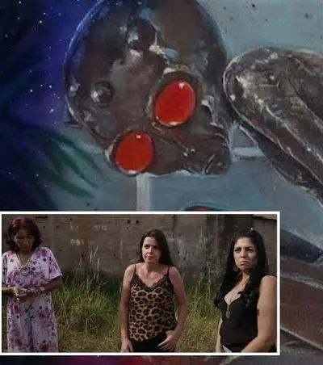
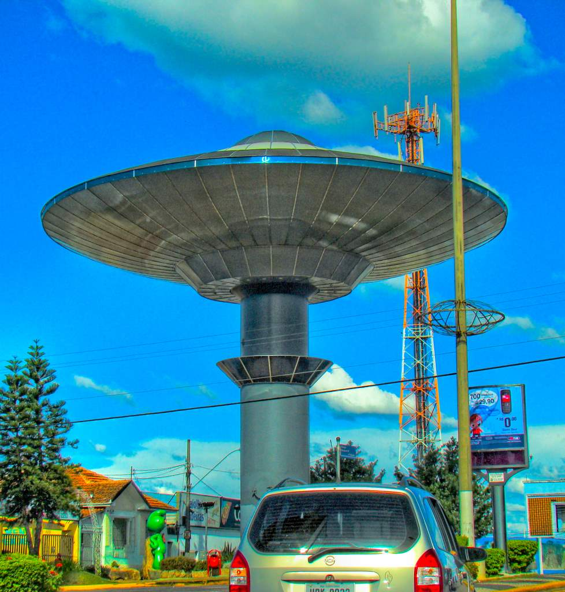

Warum Varginha so stark ist
Der Varginha-Fall ist nicht einfach nur eine weitere UFO-Sichtung. Genau das macht ihn für Dr. Sourkraut Filez so wertvoll. Hier verschmilzt gleich mehrere Arten von Hochstrangeness zu einer einzigen Akte: Crash-Gerüchte, Wesen-Sichtung, militärische Präsenz, Einschüchterung, Tod eines beteiligten Polizisten und jahrzehntelange Cover-up-Vorwürfe.
Für viele Believer ist Varginha deshalb nicht bloß „interessant“, sondern einer der wenigen Fälle, bei denen sich alles so verdichtet, dass der Begriff Brasiliens Roswell fast zwangsläufig fällt.


Was 1996 passiert sein soll
Im Januar 1996 meldeten Bewohner von Varginha im brasilianischen Bundesstaat Minas Gerais eine Reihe seltsamer Ereignisse. Berichtet wurde von einem möglichen Absturz oder Notfallobjekt, von ungewöhnlichen Militärbewegungen und vor allem von der Sichtung einer kleinen, braun wirkenden, angeblich stark riechenden Kreatur mit auffälligem Kopf und roten Augen.
Besonders berühmt wurden die Aussagen junger Zeuginnen, die ein Wesen in der Stadt gesehen haben wollen. Von dort aus eskalierte das Narrativ: Militärfahrzeuge, Transporte, abgesperrte Areale, eingefangene Wesen, tote und lebende Kreaturen — und die Vermutung, dass die eigentliche Geschichte nie offen gesagt wurde.
Warum James Fox der moderne Verstärker ist
Für heutige Leser ist James Fox fast so wichtig wie der Ursprungsfall selbst. Seine Dokumentation Moment of Contact hat Varginha nicht einfach nur neu erzählt — sie hat den Fall für eine neue Generation von Deep Researchers emotional aufgeladen, neu strukturiert und wieder auf die internationale Bühne gebracht.
Entscheidend ist dabei: Fox behandelt Varginha nicht wie ein lächerliches Alt-UFO, sondern wie eine offene Akte mit noch lebenden Narben. Zeugenaussagen, Ortsbegehungen, Karten, militärische Spurenelemente und die Behauptung, dass sogar Mediziner oder Sicherheitskräfte Kontakt mit einem nichtmenschlichen Wesen hatten, geben dem Fall moderne Wucht.
Der medizinische Strang: verstorbene und lebende Zeugen
Einer der stärksten Punkte im modernen Varginha-Diskurs ist genau jener Strang, den viele klassische Zusammenfassungen nur streifen: der medizinische Kontakt mit dem Wesen. In neueren James-Fox-Kontexten und erweiterten Darstellungen taucht der damalige Neurochirurg Dr. Ítalo Venturelli als Schlüsselfigur auf. Er beschreibt einen direkten, kurzen Kontakt mit einem lebenden nichtmenschlichen Wesen im Krankenhaus — inklusive auffälliger Augen, fremdartigem Geruch und einer Erfahrung, die er selbst fast an die Grenze von nonverbaler oder telepathischer Verständigung rückt.
Gerade für Believer ist das ein massiver Eskalationspunkt: Nicht nur Soldaten, nicht nur Gerüchte auf der Straße, sondern medizinisches Personal im klinischen Raum. Noch schwerer wiegt, dass parallel im größeren Narrativ immer wieder der Fall eines Mannes auftaucht, der nach Kontakt mit einer Kreatur später starb — meist in Verbindung mit dem Polizisten Marco Eli Chereze, dessen Tod in der Community als düsterer Marker der ganzen Akte weiterlebt.
Und genau hier entsteht der Sog: Einige Figuren sind bereits tot, andere leben noch und sprechen. Das verändert die Dramaturgie des Falls komplett. Eine tote Schlüsselfigur wirkt wie versiegelte Vergangenheit; ein noch lebender Arzt oder Zeuge, der in James-Fox-nahem Material auftaucht, macht aus der Akte wieder Gegenwart. Genau das verleiht Varginha das Gefühl, dass die Sache nie wirklich zu Ende erzählt wurde.
Das eigentliche Rabbit Hole
Der härtere believer-freundliche Reiz liegt nicht nur in der Frage, ob etwas abgestürzt ist. Das eigentliche Rabbit Hole ist die Möglichkeit, dass in Varginha gleich mehrere Linien zusammenlaufen: Crash-Bergung, lebende Entität, lokales Militär, spätere Einschüchterung und institutionelles Schweigen. Genau das hebt die Akte über normale Sichtungsfälle hinaus.
Varginha ist damit ein Paradefall für eure Audience: nicht bloß Licht am Himmel, sondern Körperlichkeit, Zeugenangst, militärischer Druck und eine Stadt, die die Geschichte bis heute nicht loswird.
Die skeptische Gegenlinie — und warum sie den Fall nicht killt
Natürlich gibt es Gegenargumente. Offizielle Stellen und skeptische Einordnungen verweisen auf Verwechslungen, lokale Dynamiken, urbane Legenden und die Möglichkeit, dass aus einzelnen Ereignissen später ein Gesamtmythos gebaut wurde. Genau das muss in einer guten Sourkraut-Akte genannt werden.
Aber gerade bei Varginha zerstört diese Gegenlinie das Mysterium nicht vollständig. Im Gegenteil: Für viele macht sie den Fall sogar noch interessanter, weil trotz aller Rationalisierung ein harter Rest bleibt — zu viele Menschen, zu viele Details, zu viel emotionale Konsistenz im Zeugenkern.
Warum Varginha bis heute nachhallt
Varginha hat alles, was einen Fall über Jahrzehnte lebendig hält: Believer-Energie, menschliche Dramatik, Wesen-Komponente, Militär-Komponente, Cover-up-Vibes und den modernen James-Fox-Anschluss. Das ist kein kalter Archivfall, sondern eine Akte, die sich bis heute so anfühlt, als sei sie nie wirklich abgeschlossen worden.
Genau deshalb gehört Varginha zu den Fällen, die weit über ihren Ursprungsort hinauswirken. Nicht nur wegen des alten Schocks, sondern weil das Echo dieses Ereignisses immer noch durch Dokumentationen, Zeugenaussagen, Foren und die kollektive UFO-Erinnerung wandert.